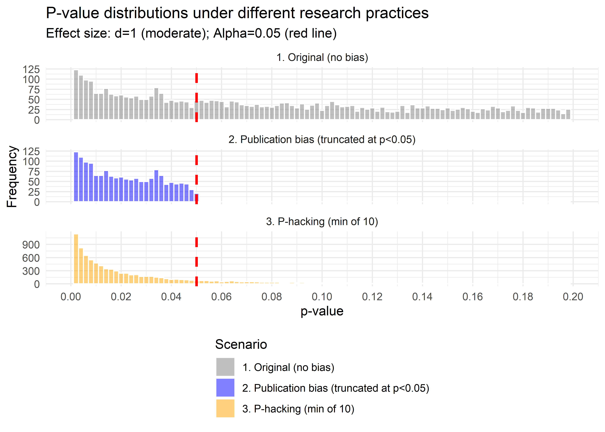
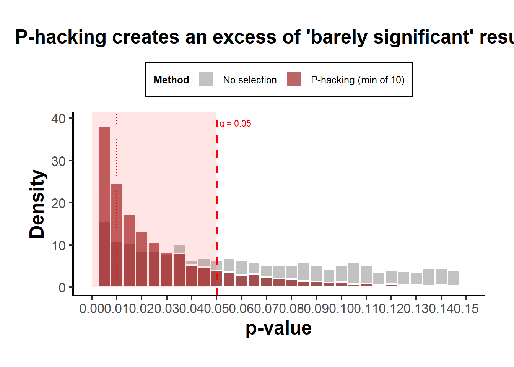
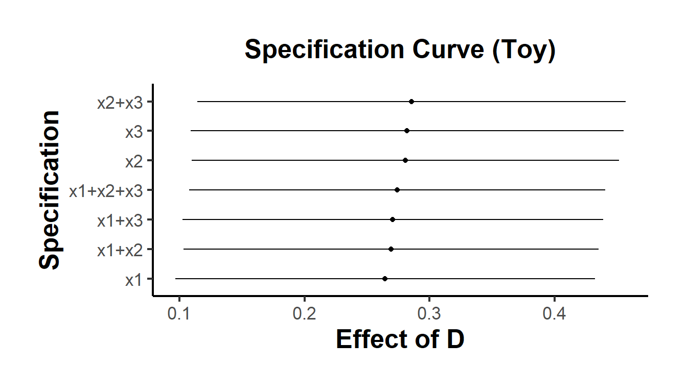

37.5 p-Hacking
“If you torture the data long enough, it will confess to anything.” - Ronald Coase
(Our job here is to spot bruises.)
This chapter reviews the major statistical tools developed to diagnose, detect, and adjust for p-hacking and related selective-reporting practices. We focus on the mathematical foundations, assumptions, and inferential targets of each method; map the different “schools of thought”; summarize the simulation evidence and the spirited debates. This section also offers practical advice for applied researchers.
We separate three concepts that are often conflated:
- p-hacking: data-dependent analysis choices (optional stopping, selective covariates, flexible transformations, subgrouping, selective outcomes/specifications) aimed at achieving \(p \le \alpha\).
- publication bias (a.k.a. selective publication): the file-drawer problem (journals, reviewers, or authors preferentially publish significant or “exciting” results).
- QRPs (questionable research practices): a broader umbrella that includes p-hacking and HARKing (hypothesizing after results are known).
This section is about detection (diagnosis) and adjustment (bias correction) for these phenomena in literatures and meta-analyses. We aim for methods that either (i) test for their presence, (ii) quantify their magnitude, or (iii) produce bias-adjusted effect estimates and uncertainty statements.
37.5.1 Theoretical Signatures of p-Hacking and Selection
37.5.1.1 p-values under the null and under alternatives
Let \(Z \sim \mathcal{N}(\mu,1)\) denote a \(z\)-statistic for a one-sided test, where \(\mu\) is the noncentrality: \(\mu = \theta / \mathrm{SE}\) for true effect \(\theta\) and known standard error \(\mathrm{SE}\). The one-sided \(p\)-value is \(P = 1 - \Phi(Z)\). A change of variables yields the density of \(P\) under \(\mu\):
\[ f(p \mid \mu) = \frac{\phi(\Phi^{-1}(1-p) - \mu)}{\phi(\Phi^{-1}(1-p))} = \exp\big\{\mu z - \tfrac{1}{2}\mu^2\big\}, \quad z = \Phi^{-1}(1-p), \quad p \in (0,1). \]
Under the null (\(\mu=0\)), \(f(p\mid 0) \equiv 1\) (Uniform\((0,1)\)).
Under true effects (\(\mu \ne 0\)), the density decreases in \(p\): small \(p\)’s are more likely.
For two-sided tests, \(P = 2[1-\Phi(|Z|)]\), and the density becomes a mixture due to \(|Z|\) 1
37.5.1.2 Selection on statistical significance
Let \(S \in \{0,1\}\) indicate publication/reporting. Suppose selection depends on the p-value via a selection function \(s(p) = \Pr(S=1\mid p)\). The observed \(p\)-density is
\[ f_{\mathrm{obs}}(p) \propto f(p \mid \mu) s(p). \]
where \(f(p\mid \mu)\) is the theoretical distribution of \(p\)-values given a true effect \(\mu\) and \(s(p)\) is the probability that a result with \(p\) is reported or published.2
This function results in two related phenomena (both distort what we see in the published literature), but they’re conceptually distinct and represent two polar mechanisms of how the distortion arises. Mathematically, they correspond to different shapes of the selection function \(s(p)\).
Two polar cases:
- Pure publication bias: \(s(p)=\mathbb{1}\{p\le \alpha\}\) (hard threshold).
- p-hacking: \(s(p)\) is smoother or has spikes (e.g., bunching just below \(\alpha\), or data-dependent steps that inflate the mass in \((0,\alpha]\), especially near \(\alpha\)).
In the pure publication bias (the “hard threshold”) case
Mechanism: Results are analyzed honestly, but only significant findings are published.
Mathematically: The selection function is a step function,
\[ s(p) = \begin{cases} 1, & p \le \alpha,\\[4pt] 0, & p > \alpha, \end{cases} \]
or sometimes a monotone increasing function that jumps at \(p=\alpha\).
Every result above the conventional significance threshold is suppressed, which is the infamous file drawer problem (Rosenthal 1979; Iyengar and Greenhouse 1988).Consequence: The literature includes only those tests that crossed the line; but the p-values themselves were generated correctly under valid statistical procedures.
Thus, all distortion happens after data analysis.
In the p-hacking (the “smooth or spiked selection”) case
Mechanism: The researcher manipulates the analysis itself (e.g.,, tries multiple specifications, adds/drops covariates, peeks at data, etc.) until a significant p emerges.
Every result is “eligible” for publication, but the reported \(p\) has been manufactured by analytical flexibility.Mathematically: The selection function \(s(p)\) is not a hard cutoff but smoothly increasing or spiky near \(\alpha\):
\[ s(p) \text{ is large for } p \lesssim \alpha, \text{ small for } p > \alpha. \]
Researchers disproportionately generate or select p-values just below .05, producing bunching in \((0.045, 0.05]\). It’s a signature seen empirically in economics (Brodeur et al. 2016) and psychology (Masicampo and Lalande 2012).
Consequence: The literature is distorted within the analysis process, even if all results are published.
It inflates the frequency of borderline significant p-values and biases estimated effects upward.
They represent extreme ends of a continuum of selective processes (Table 37.1)
| Dimension | Pure publication bias | Pure p-hacking |
|---|---|---|
| Timing of distortion | After analysis (in publication) | During analysis (in researcher’s choices) |
| Selection function \(s(p)\) | Hard threshold (step at \(\alpha\)) | Smooth, often spiked near \(\alpha\) |
| Who applies selection | Editors, reviewers, publication process | Researchers themselves |
| What’s hidden | Nonsignificant studies | Nonsignificant analyses within studies |
| Empirical pattern | Missing mass for \(p>\alpha\) | Excess mass just below \(\alpha\) |
In practice, most literatures sit somewhere in between, where both the file drawer (publication bias) and data-contingent choices (p-hacking) operate simultaneously.
That’s why comprehensive models of bias (e.g., I. Andrews and Kasy (2019), Vevea and Hedges (1995), Bartoš and Schimmack (2022)) allow \(s(p)\) to take flexible forms that include both extremes as special cases.
Publication bias hides results after they’re obtained.
p-hacking reshapes results before they’re reported.
They both distort the observable distribution of \(p\)-values, but they do so through opposite ends of the research process.
At the surface level, both processes produce similar observable patterns of published \(p\)-values:
- Right-skew among significant \(p\)’s because only (or mostly) small p’s appear: more mass near \(0\) than near \(\alpha\).
- Bunching just below \(\alpha\) (e.g., \(z\) near \(1.96\)) suggests manipulation or selection thresholds. In both cases, you’ll often see a cliff or spike just below the threshold.
- Funnel plot asymmetry: small studies show larger effects (or higher \(z\)) than large ones. Small studies (with larger SEs) are more likely to pass the significance gate if they overestimate the effect, producing a one-sided funnel.
- Excess significance: more significant results than expected given estimated power. The proportion of significant results exceeds what would be expected given the median power of published studies.
From a purely descriptive point of view (e.g., looking only at a histogram of published p-values), you cannot tell them apart.
That’s why analysts call them observationally confounded mechanisms: different generative processes, same marginal distributions.
The distinction lies in where the distortion occurs in the data-generation pipeline (Figures 37.1 and 37.2)
- Pure publication bias
The underlying analysis is honest: each study reports one \(p\) generated from the correct \(f(p\mid \mu)\).
But the publication process truncates the distribution: only \(p \le \alpha\) appear.
Mathematically, the observed density is
\[ f_{\mathrm{obs}}(p) = \frac{f(p\mid \mu) \mathbb{1}\{p \le \alpha\}}{\Pr(p \le \alpha\mid \mu)}. \]
Key signature: a sharp truncation, literally no data above \(\alpha\). There’s no spike within \((0,\alpha)\), just absence beyond it.
- p-hacking
The distortion happens before the “publication filter,” during the analysis. Researchers keep sampling, transforming, or subgrouping until they find \(p\le\alpha\).
Each study’s reported \(p\) is the minimum over multiple draws \(p_1,\dots,p_m\) from the true \(f(p\mid\mu)\):
\[ P_{\text{hack}} = \min(P_1, \dots, P_m). \]
The resulting distribution is
\[ f_{\text{hack}}(p) = m [1 - F(p)]^{m-1} f(p), \]
which spikes near 0 when \(m\) is large, or piles up near \(\alpha\) if researchers stop only when reaching significance.
Key signature: not just truncation, but a smooth inflation near \(\alpha\), sometimes with a local mode or “bump” just below it.
set.seed(123)
# True effect small: mu = 1 (z ~ N(1,1))
simulate_p <- function(mu = 1,
m = 1,
alpha = 0.05,
n = 10000) {
z <- rnorm(n * m, mu, 1)
p <- 2 * (1 - pnorm(abs(z)))
if (m > 1) {
p <- matrix(p, n, m)
p <- apply(p, 1, min) # pick the smallest = p-hacking
}
return(p)
}
# Generate full distributions (don't truncate yet)
p_orig <-
simulate_p(mu = 1, m = 1) # original distribution
p_pub <-
p_orig[p_orig <= 0.05] # truncate to sigs (publication bias)
p_hack <-
simulate_p(mu = 1, m = 10) # p-hacking: 10 tries, keep min
# Create a more interpretative comparison
library(ggplot2)
library(dplyr)
# Compare three scenarios
df <- rbind(
data.frame(p = p_orig, type = "1. Original (no bias)"),
data.frame(p = c(p_pub, rep(
NA, length(p_orig) - length(p_pub)
)),
type = "2. Publication bias (truncated at p<0.05)"),
data.frame(p = p_hack, type = "3. P-hacking (min of 10)")
) %>%
filter(!is.na(p))# Focus on the critical region (0 to 0.2)
ggplot(df, aes(p, fill = type)) +
geom_histogram(
binwidth = 0.002,
position = "identity",
alpha = 0.5,
color = "white"
) +
geom_vline(
xintercept = 0.05,
linetype = "dashed",
linewidth = 1,
color = "red"
) +
scale_x_continuous(limits = c(0, 0.2), breaks = seq(0, 0.2, 0.02)) +
scale_fill_manual(values = c("gray50", "blue", "orange")) +
labs(
x = "p-value",
y = "Frequency",
title = "P-value distributions under different research practices",
subtitle = "Effect size: d=1 (moderate); Alpha=0.05 (red line)",
fill = "Scenario"
) +
# causalverse::ama_theme() +
theme_minimal() +
theme(legend.position = "bottom",
legend.direction = "vertical") +
facet_wrap( ~ type, ncol = 1, scales = "free_y")
Figure 37.1: Comparison of p-value Distributions
# Alternative: Show the pile-up more clearly
df2 <- rbind(
data.frame(p = p_orig, type = "No selection"),
data.frame(p = p_hack, type = "P-hacking (min of 10)")
)
ggplot(df2, aes(p, fill = type)) +
geom_histogram(
aes(y = after_stat(density)),
binwidth = 0.005,
position = "identity",
alpha = 0.6,
color = "white"
) +
geom_vline(
xintercept = 0.05,
linetype = "dashed",
linewidth = 1,
color = "red"
) +
geom_vline(
xintercept = 0.01,
linetype = "dotted",
linewidth = 0.5,
color = "red"
) +
scale_x_continuous(limits = c(0, 0.15), breaks = seq(0, 0.15, 0.01)) +
scale_fill_manual(values = c("gray60", "darkred")) +
annotate(
"text",
x = 0.05,
y = Inf,
label = "α = 0.05",
hjust = -0.1,
vjust = 2,
color = "red",
size = 3
) +
annotate(
"rect",
xmin = 0,
xmax = 0.05,
ymin = 0,
ymax = Inf,
alpha = 0.1,
fill = "red"
) +
labs(
x = "p-value",
y = "Density",
title = "P-hacking creates an excess of 'barely significant' results",
fill = "Method"
) +
# theme_minimal() +
causalverse::ama_theme() +
theme(legend.position = "top")
Figure 37.2: P-hacking Distributions
Interpretation:
- Both curves show an absence of \(p>0.05\), so both produce “only significant” results.
- The publication-bias case ends abruptly at 0.05 (a cliff).
- The p-hacking case has a bulge just below 0.05, the telltale “bunching” pattern seen in real literature (Brodeur et al. 2016).
Why this distinction matters
- If the mechanism is pure truncation, the bias can be corrected with selection models that model \(s(p)\) as a step function (Vevea and Hedges 1995).
- If the mechanism is smooth hacking, then the effective \(s(p)\) is continuous or even non-monotone, which these models may miss. Hence, newer approaches such as z-curve, p-curve, and nonparametric selection models Bartoš and Schimmack (2022) are more appropriate.
In practice, literatures exhibit both: authors p-hack to cross \(\alpha\), then journals favor those results, compounding bias. So although the observable patterns overlap, the mechanistic implications and statistical corrections differ (Table 37.2).
| Mechanism | When bias enters | Typical \(s(p)\) | Observable pattern | Distinguishable feature |
|---|---|---|---|---|
| Publication bias | After analysis (file drawer) | Step function at \(\alpha\) | Truncation at \(\alpha\) | Sharp cutoff; missing nonsignificant results |
| p-hacking | During analysis | Smooth/spiky near \(\alpha\) | Bunching below \(\alpha\) | Local spike or inflation near threshold |
Both yield “too many small p-values,” but p-hacking reshapes the distribution, while publication bias truncates it. That’s why, theoretically, they are modeled as polar cases, distinct endpoints of the same general selection framework.
37.5.2 Method Families
37.5.2.1 Descriptive diagnostics & caliper tests
Targets: patterns in \(p\)-histograms or \(z\)-densities suggesting manipulation.
- Caliper test around \(\alpha\): Compare counts just below vs. just above the significance threshold.
Let \(T\) be a \(z\)-statistic and \(c=1.96\) (two-sided \(\alpha=0.05\)). With a small bandwidth \(h>0\), define
\[ N_+ = \#\{i: T_i \in (c, c+h]\}, \quad N_- = \#\{i: T_i \in (c-h, c]\}. \]
Under continuity of the density at \(c\) and no manipulation, \(N_+\) and \(N_-\) should be similar. A binomial test (or local polynomial density test) assesses \(H_0: f_T(c^-) = f_T(c^+)\).
- Heaping near \(p=.05\): Excess in \((.045,.05]\) relative to \((.04,.045]\) (binning-based tests).
Pros: Simple, visual.
Cons: Sensitive to binning and heterogeneity; can’t separate publication bias from p-hacking.
37.5.2.2 Excess significance tests
Ioannidis and Trikalinos (2007) -type logic: If study \(i\) has power \(\pi_i\) to detect a common effect \(\hat\theta\) at its \(\alpha_i\), then the expected number of significant results is \(E=\sum_i \pi_i\). Compare the observed \(O\) to \(E\) via a binomial (or Poisson-binomial) tail: \[ O \sim \text{Poisson-Binomial}(\pi_1,\ldots,\pi_k), \quad \text{test } \Pr(O \ge O_{\text{obs}} \mid \boldsymbol{\pi}). \] Pros: Uses study-level power.
Cons: Depends on the (possibly biased) common-effect estimate; heterogeneity complicates power computation.
37.5.2.3 Funnel asymmetry tests and meta-regression
Let \(y_i\) be estimated effects and \(s_i\) their standard errors.
Egger regression: \(z_i = y_i/s_i\). Fit \[ z_i = \beta_0 + \beta_1 \cdot \frac{1}{s_i} + \varepsilon_i, \quad \varepsilon_i \sim \mathcal{N}(0,\sigma^2). \] A nonzero intercept \(\beta_0\) indicates small-study effects (possibly selection).
PET-PEESE (precision-effect testing and precision-effect estimate with standard error): regress effect sizes on \(s_i\) or \(s_i^2\) (weighted by \(1/s_i^2\)), \[ \text{PET: } y_i = \beta_0 + \beta_1 s_i + \varepsilon_i, \quad \text{PEESE: } y_i = \beta_0 + \beta_1 s_i^2 + \varepsilon_i. \] The intercept \(\beta_0\) estimates the effect “at infinite precision” (bias-adjusted). Use PET to decide whether to report PEESE (various decision rules exist).
Pros: Easy, interpretable, works with non-\(p\) results.
Cons: Conflates genuine small-study heterogeneity with bias; sensitive to model misspecification and between-study variance.
37.5.2.4 Weight-function selection models (classical likelihood)
Assume a common effect (or random effects) and a stepwise selection weight \(w(p)\) by \(p\)-bins. With fixed effect \(\theta\) and normal sampling,
\[ y_i \sim \mathcal{N}(\theta, s_i^2), \quad p_i = p(y_i). \]
Observed likelihood with selection weights:
\[ L(\theta, \mathbf{w}) \propto \prod_{i=1}^k \frac{\phi\left(\frac{y_i-\theta}{s_i}\right)\frac{1}{s_i} w(p_i)} {\int \phi\left(\frac{y-\theta}{s_i}\right)\frac{1}{s_i} w(p(y)) dy}. \]
\[ L(\theta, \mathbf{w}) \propto \prod_{i=1}^k \frac{\phi\left(\frac{y_i-\theta}{s_i}\right)\frac{1}{s_i} w(p_i)} {\int \phi\left(\frac{y-\theta}{s_i}\right)\frac{1}{s_i} w(p(y)) dy}. \]
where typical \(w(p)\): piecewise constants over \((0,.001],(.001,.01],(.01,.05],(.05,1]\) Vevea and Woods (2005). Random-effects models integrate over \(\theta_i \sim \mathcal{N}(\theta, \tau^2)\).
Pros: Directly models selection; yields adjusted effects.
Cons: Partial identifiability; sensitive to binning and \(w(\cdot)\) parameterization; requires careful computation.
37.5.2.5 p-curve (diagnosis and effect estimation)
Given only significant \(p\)-values (e.g., \(p_i \le \alpha\)), define the conditional density
\[ f_\alpha(p \mid \mu) = \frac{f(p \mid \mu)}{\Pr(P \le \alpha \mid \mu)}, \quad 0<p\le \alpha. \]
Diagnostics:
Right-skew test: Under \(H_0\) (no evidential value), conditional \(p/\alpha \sim \text{Uniform}(0,1)\); test whether mass is concentrated near \(0\) (e.g., binomial test for \(p < \alpha/2\), Stouffer’s \(z\) for \(-\ln p\)).
Flat/left-skew suggests no evidential value (or severe p-hacking).
Effect estimation: Maximize the conditional likelihood \(\prod_i f_\alpha(p_i\mid \mu)\) over \(\mu\) (or map \(\mu\) to effect size \(\theta\)).
Pros: Works with published significant results; robust to missing nonsignificant studies if selection is mostly on significance.
Cons: Sensitive to heterogeneity, \(p\)-dependence, and inclusion of \(p\)-values from p-hacked specifications; uses only significant \(p\)’s.
37.5.2.6 p-uniform and p-uniform*
Closely related to p-curve but formulated as an MLE for the effect based on the conditional distribution of \(p\) given \(p\le \alpha\). Original p-uniform assumes homogeneous effects (Van Assen, Aert, and Wicherts 2015); p-uniform* relaxes this (improved bias properties under heterogeneity) (Aert and Assen 2018).
- Estimator: \(\hat\theta\) maximizes \(\prod_i f_\alpha(p_i \mid \theta)\), with \(f_\alpha\) derived from the test family (e.g., \(t\)-tests). Variants provide CIs via profile likelihood.
Pros: Likelihood-based; can be extended to random-effects.
Cons: Original p-uniform biased under heterogeneity and low power; p-uniform* mitigates but requires care in practice (choice of \(\alpha\), modeling of \(t/z\) tests).
37.5.2.7 z-curve (mixtures on truncated z)
Model the distribution of observed significant \(z\)-scores via a finite mixture: \[ Z \mid S=1 \sim \sum_{k=1}^K \pi_k \mathcal{N}(\mu_k, 1) \text{ truncated to } \{|Z|\ge z_{\alpha/2}\}. \] Estimate \((\pi_k, \mu_k)\) by EM (or Bayesian mixtures). Then compute:
- Expected Discovery Rate (EDR) at level \(\alpha\): \[ \mathrm{EDR} = \int \Pr(|Z| \ge z_{\alpha/2} \mid \mu) d\hat G(\mu). \]
- Expected Replication Rate (ERR) for the subset already significant: \[ \mathrm{ERR} = \mathbb{E}\big[\Pr(|Z^\star| \ge z_{\alpha/2} \mid \mu) \big| |Z|\ge z_{\alpha/2}\big]. \]
Pros: Flexible heterogeneity modeling; informative discovery/replication diagnostics.
Cons: Identification relies on truncation; mixture choice (\(K\)) and regularization matter.
37.5.2.8 Nonparametric selection and deconvolution
Observed \(z\)-density factorizes as
\[ f_{\mathrm{obs}}(z) \propto s(z) (g \star \varphi)(z), \quad \varphi=\mathcal{N}(0,1), \quad g(\mu)=\text{effect distribution}. \]
With shape restrictions (e.g., monotone, stepwise \(s\)), both \(s\) and \(g\) are estimable via nonparametric MLE. Inference delivers an estimated selection function and a bias-corrected effect distribution (I. Andrews and Kasy 2019).
Pros: Minimal parametric assumptions; estimates the selection mechanism itself.
Cons: Requires large samples of \(z\)’s; sensitive to tuning and shape restrictions; computationally heavier.
37.5.2.9 Robust Bayesian meta-analysis (RoBMA and kin)
Construct a model-averaged posterior by mixing (Bartoš and Maier 2020):
Effect models: null vs. alternative; fixed vs. random effects.
Bias models: none vs. PET-PEESE vs. selection (weight) models.
Posterior model probabilities: \[ p(M_j \mid \text{data}) \propto p(\text{data} \mid M_j) p(M_j), \] and a model-averaged effect: \[ p(\theta \mid \text{data}) = \sum_j p(\theta \mid \text{data}, M_j) p(M_j \mid \text{data}). \] Bayes factors quantify evidence for bias models and for \(\theta=0\).
Pros: Integrates over model uncertainty; often best-in-class calibration in simulations.
Cons: Requires priors and specialized software; transparency requires careful reporting.
37.5.2.10 Statistical forensics (reporting integrity)
- statcheck: recomputes \(p\) from reported test statistics and flags inconsistencies.
- GRIM (Granularity-Related Inconsistency of Means): checks whether reported means (with integer-count data) align with feasible fractions \(k/n\) at reported \(n\).
- GRIMMER: analogous checks for standard deviations.
Pros: Catches reporting errors and some forms of fabrication.
Cons: Does not measure p-hacking directly; depends on data granularity and reporting completeness.
37.5.3 Mathematical Details and Assumptions
37.5.3.1 Conditional p-density and likelihoods for p-curve/p-uniform
For a one-sided \(z\)-test with noncentrality \(\mu\), we derived
\[ f(p \mid \mu) = \exp\{\mu z - \tfrac{1}{2}\mu^2\}, \quad z=\Phi^{-1}(1-p). \]
The power at level \(\alpha\) is
\[ \pi(\mu,\alpha) = \Pr(P\le \alpha \mid \mu) = \Pr(Z \ge z_{1-\alpha} \mid \mu) = 1-\Phi(z_{1-\alpha} - \mu). \]
Conditional on \(P\le \alpha\),
\[ f_\alpha(p \mid \mu) = \frac{\exp\{\mu z - \tfrac{1}{2}\mu^2\}}{\pi(\mu,\alpha)}, \quad p\in(0,\alpha]. \]
Likelihood (p-curve/p-uniform):
\[ \ell(\mu) = \sum_{i=1}^k \Big[\mu z_i - \tfrac{1}{2}\mu^2 - \log \pi(\mu,\alpha)\Big], \quad z_i=\Phi^{-1}(1-p_i). \]
Map \(\mu\) to effect size, e.g., standardized mean difference \(d = \mu \sqrt{2/n}\) if appropriate.
Heterogeneity: Replace \(\mu\) by a mixture; p-uniform* introduces random effects. Identifiability is delicate with only significant \(p\)’s: priors or constraints regularize.
37.5.3.2 Weight-function likelihoods
Let \(w(p)\) be piecewise-constant with parameters \(\mathbf{w} = (w_1,\ldots,w_B)\) over bins \(\mathcal{I}_b\). For fixed-effects:
\[ L(\theta,\mathbf{w}) \propto \prod_i \frac{\phi\left(\frac{y_i-\theta}{s_i}\right)\frac{1}{s_i} w_b \mathbb{1}\{p_i\in \mathcal{I}_b\}} {\sum_{b=1}^B w_b \int_{p(y)\in \mathcal{I}_b} \phi\left(\frac{y-\theta}{s_i}\right)\frac{1}{s_i} dy}. \]
Random-effects integrate over \(\theta_i \sim \mathcal{N}(\theta,\tau^2)\) in numerator/denominator. Parameters \(\mathbf{w}\) are identifiable up to scale (normalize by, e.g., \(w_B=1\)). Standard inference uses profile likelihood or the observed information.
37.5.3.3 Egger/PET-PEESE algebra
Assume \(y_i = \theta + b_i + \varepsilon_i\), where \(b_i\) captures small-study bias correlated with \(s_i\) and \(\varepsilon_i \sim \mathcal{N}(0,s_i^2)\). Regressions: \[ \text{PET: } y_i = \beta_0 + \beta_1 s_i + \varepsilon_i', \quad \text{PEESE: } y_i = \beta_0 + \beta_1 s_i^2 + \varepsilon_i', \] with weights \(1/s_i^2\). Under a linear bias-in-\(s_i\) model, \(\beta_0 \approx \theta\).
37.5.3.4 Andrews–Kasy identification
Let \(f_{\mathrm{obs}}(z)\) be the observed density of \(z\)-scores. Write
\[ f_{\mathrm{obs}}(z) = \frac{s(z) \int \varphi(z-\mu) dG(\mu)}{\int s(u) \int \varphi(u-\mu) dG(\mu) du}. \]
Impose \(s(z)\) monotone non-decreasing (selection more likely for larger \(|z|\) or for \(z>0\) in one-sided literature), and \(s\) stepwise on known cutpoints (e.g., \(z\) corresponding to \(\alpha=.10,.05,.01\)). Estimate \(s\) and \(G\) by NPMLE over these classes (convex optimization over mixing measures and stepweights). Bias-corrected effect summaries are obtained by integrating w.r.t. \(\hat G\).
37.5.3.5 z-curve EM
Observed \(z_i\) with \(|z_i|\ge z_{\alpha/2}\).
E-step:
\[ \gamma_{ik} = \frac{\pi_k \varphi(z_i - \mu_k)}{\sum_{j=1}^K \pi_j \varphi(z_i - \mu_j)}. \]
M-step (before truncation correction):
\[ \hat\pi_k \leftarrow \frac{1}{n}\sum_i \gamma_{ik}, \quad \hat\mu_k \leftarrow \frac{\sum_i \gamma_{ik} z_i}{\sum_i \gamma_{ik}}. \]
Truncation is handled by normalizing component likelihoods over \(\{|z|\ge z_{\alpha/2}\}\). Posterior across \(\mu\) gives EDR/ERR.
37.5.4 Schools of Thought and Notable Debates
Curve methods (p-curve, p-uniform) vs. selection models
- Curve camp: Conditioning on \(p\le\alpha\) is a feature, not a bug (i.e., model only what is observed); robust when the publication threshold dominates selection.
- Critiques: Ignoring nonsignificant studies throws away information; heterogeneity inflates bias (original p-uniform), and p-hacked \(p\)’s violate independence.
- Responses: p-curve’s evidential-value tests are diagnostic, not estimators of the grand mean; p-uniform* improves bias handling; careful inclusion/exclusion rules mitigate hacking artifacts.
Selection models vs. PET-PEESE
- Selection camp: Directly model the selection mechanism (\(w(p)\)); theoretically principled for publication bias.
- PET-PEESE camp: Simple, transparent; adjusts for small-study effects without committing to a (possibly wrong) \(w(p)\).
- Meta-simulations: Often find PET-PEESE good at Type I control when the true effect is near zero but biased when heterogeneity is large; selection models better recover effects when the selection form is approximately correct but can be unstable otherwise.
z-curve vs. others
- z-curve: Flexible mixtures capture heterogeneity; yields EDR/ERR and visually compelling diagnostics of “too few” discoveries relative to what the mixture implies.
- Critiques: Mixture choice and truncation estimation can be sensitive; interpretability hinges on the mapping from \(\mu\)-mixture to power under selection.
Nonparametric selection (Andrews–Kasy) vs. parametric approaches
- Nonparametric: Fewer parametric assumptions, can recover selection function shapes (e.g., spikes at \(z=1.96\)).
- Critiques: Data-hungry; shape restrictions still assumptions; computational complexity.
Several simulation comparisons (e.g., Carter et al. (2019)) report that no single method dominates. Model-averaged Bayesian approaches (RoBMA) often perform well by hedging across bias models; selection models excel when selection is correctly specified; PET-PEESE is attractive for simple screening; p-curve/p-uniform are better as diagnostics (with cautious effect estimation).
For a table of summary, refer to Table 37.3.
| Topic | Proponents | Critics | Core claim | Counter-claim | Applied implication |
|---|---|---|---|---|---|
| p-curve (diagnostic & estimator) | Simonsohn, Nelson, and Simmons (2014b) | Morey and Davis-Stober (2025) | Right-skew among significant p’s indicates evidential value; can estimate effect from sig-only p’s | Estimator can be biased/undercover with heterogeneity, non-iid p’s, misspecified tests | Use for diagnostics; for estimation prefer p-uniform*, selection models, or RoBMA |
| p-uniform vs p-uniform* | Van Assen, Aert, and Wicherts (2015), Aert and Assen (2018) | Curve-method skeptics | p-uniform works under homogeneity; p-uniform* better under RE | Still sensitive to wrong test family, dependence among p’s | Prefer p-uniform* with care; match test families; sensitivity analyses |
| z-curve & Replicability-Index | Bartoš and Schimmack (2022) | Misc. critics | Mixture on truncated z gives EDR/ERR and replicability diagnostics | Component choice and truncation make results sensitive; dependence issues | Great for heterogeneity diagnostics; report EDR/ERR + sensitivity |
| PET-PEESE vs selection models | Stanley and Doucouliagos (2012), Stanley and Doucouliagos (2014) | Selection-model proponents | PET-PEESE is simple & transparent for small-study effects | Over/under-correction if small-study effects reflect real heterogeneity | Run PET-PEESE as a screen; headline estimate via selection/RoBMA |
| Trim-and-fill | Duval and Tweedie (2000) | Misc. critics | Impute missing to symmetrize funnel; fast heuristic | Can misbehave under complex selection; shouldn’t be sole method | Use as quick sensitivity, not a final estimator |
| Excess-significance tests | Ioannidis and Trikalinos (2007) | Misc. critics | Simple test: too many significant vs expected | Uses biased effect to compute power; ignores heterogeneity properly | Use as a red flag; not definitive proof |
| Finance factor zoo / t≥3 rule | C. R. Harvey, Liu, and Zhu (2016) | Skeptics of universal thresholds | Multiple testing inflates false factors; raise t-threshold | Arbitrary thresholds don’t fix specification search | Control FDR/Holm; pre-specify; publish nulls; use out-of-sample |
Key takeaways:
- p-curve: Great at diagnosing evidential value; controversial as a meta-analytic estimator (especially under heterogeneity/dependence).
- z-curve: Powerful heterogeneity-aware diagnostics (EDR/ERR); interpret with sensitivity to mixture choices.
- PET-PEESE: Simple screening; avoid as the only correction.
- Selection models and RoBMA: Strong for effect estimation; assumptions must be transparent; benefit from model averaging.
37.5.5 Practical Guidance for Applied Analysts
- Use multiple lenses: funnel asymmetry (Egger), PET-PEESE, at least one selection model, and at least one curve method. Convergence across methods is informative; divergence is itself a result.
- Prefer random-effects throughout; heterogeneity is the rule in business and social science literature.
- When only significant studies are available, p-curve/p-uniform* provide diagnostic power; but seek gray literature to reduce selection.
- For quantification and decision-making (e.g., whether to act on an effect), consider RoBMA or selection models with sensitivity analyses over \(w(p)\) grids.
- Always report assumptions, inclusion criteria, pre-specified analysis plans, and specification curves for your own analyses to preempt p-hacking concerns.
The following code is illustrative (toy implementations). For production work, use vetted packages (e.g.,
metafor,weightr,robumeta,RoBMA,puniform,zcurve).
# Toy dataset: reported p-values and study-level results
set.seed(1)
# suspicious bump?
p_sig <- c(0.001, 0.004, 0.017, 0.021, 0.032, 0.041, 0.048, 0.049)
n_sig <- length(p_sig)
# --- p-curve right-skew test (binomial below alpha/2) ---
alpha <- 0.05
below <- sum(p_sig < alpha/2)
p_binom <- binom.test(below, n_sig, 0.5, alternative = "greater")$p.value
list(
n_sig = n_sig,
count_below_alpha_over_2 = below,
right_skew_pvalue = p_binom
)
#> $n_sig
#> [1] 8
#>
#> $count_below_alpha_over_2
#> [1] 4
#>
#> $right_skew_pvalue
#> [1] 0.6367187# --- p-uniform-style MLE for one-sided z-test (toy) ---
# Conditional log-likelihood: l(mu) = sum( mu z_i - 0.5 mu^2 - log(pi(mu, alpha)) )
z <- qnorm(1 - p_sig) # one-sided z from p-values
pi_mu <- function(mu, alpha) { 1 - pnorm(qnorm(1 - alpha) - mu) }
loglik_mu <- function(mu, z, alpha) {
sum(mu * z - 0.5 * mu^2 - log(pi_mu(mu, alpha)))
}
opt <- optimize(function(m) -loglik_mu(m, z, alpha), c(-5, 5))
mu_hat <- opt$minimum
list(mu_hat = mu_hat, se_mu_naive = NA_real_) # (CI via profile LL or bootstrap)
#> $mu_hat
#> [1] 0.2568013
#>
#> $se_mu_naive
#> [1] NA# --- Egger and PET-PEESE on synthetic effect sizes ---
library(metafor)
set.seed(2)
k <- 1000
true_theta <- 0.2
s_i <- runif(k, 0.05, 0.3)
y_i <- rnorm(k, mean = true_theta, sd = s_i) + rnorm(k, sd = 0.05) # add small-study bias
# Egger test
z_i <- y_i / s_i
egger_fit <- lm(z_i ~ I(1/s_i))
egger_intercept_p <- summary(egger_fit)$coef[1,4]
# PET
pet_fit <- lm(y_i ~ s_i, weights = 1/s_i^2)
pet_est <- coef(pet_fit)[1]
# PEESE
peese_fit <- lm(y_i ~ I(s_i^2), weights = 1/s_i^2)
peese_est <- coef(peese_fit)[1]
list(egger_intercept_p = egger_intercept_p, PET = pet_est, PEESE = peese_est)
#> $egger_intercept_p
#> [1] 0.1895973
#>
#> $PET
#> (Intercept)
#> 0.196547
#>
#> $PEESE
#> (Intercept)
#> 0.2022462# --- Caliper test (binomial near z = 1.96) ---
# Construct z from y/s and test mass just above vs. below 1.96
zvals <- y_i / s_i
c <- 1.96
h <- 0.1
N_plus <- sum(zvals > c & zvals <= c + h)
N_minus <- sum(zvals > c - h & zvals <= c)
p_caliper <- binom.test(N_plus, N_plus + N_minus, 0.5, alternative = "greater")$p.value
list(N_plus = N_plus, N_minus = N_minus, caliper_p = p_caliper)
#> $N_plus
#> [1] 23
#>
#> $N_minus
#> [1] 33
#>
#> $caliper_p
#> [1] 0.9295523# --- Minimal weight-function selection model via profile likelihood (toy) ---
# Two-bin weights: w1 for p <= .05, w2 = 1 for p > .05
# Fixed-effect theta; optimize over (theta, w1).
y <- y_i; s <- s_i
pval_two_sided <- 2*(1 - pnorm(abs(y/s)))
negloglik_sel <- function(par) {
theta <- par[1]; w1 <- exp(par[2]) # enforce positivity
# Numerator w.r.t. each study
w_i <- ifelse(pval_two_sided <= 0.05, w1, 1)
num <- dnorm((y - theta)/s) / s * w_i
# Denominator: integrate over all y for each study (approx via normal CDF on p-threshold)
# For two-sided z, the region p<=.05 is |z|>=1.96. We can integrate in z-space:
mu_i <- (theta)/s
prob_sig <- pnorm(-1.96 - mu_i) + (1 - pnorm(1.96 - mu_i)) # two tails
denom <- w1 * prob_sig + (1 - prob_sig) * 1
-sum(log(num) - log(denom))
}
fit <-
optim(c(mean(y), 0),
negloglik_sel,
method = "BFGS",
control = list(reltol = 1e-9))
theta_hat <- fit$par[1]
w1_hat <- exp(fit$par[2])
list(
theta_hat = theta_hat,
weight_sig_vs_nonsig = w1_hat,
converged = fit$convergence == 0
)
#> $theta_hat
#> [1] 0.2077403
#>
#> $weight_sig_vs_nonsig
#> [1] 0.9457644
#>
#> $converged
#> [1] TRUE# --- Specification curve ---
# Fit many reasonable models and plot effect vs. specification rank
library(dplyr)
library(ggplot2)
# Fake data and specifications
n <- 500
X <- matrix(rnorm(n * 3), n, 3)
colnames(X) <- c("x1", "x2", "x3")
D <- rbinom(n, 1, 0.5)
Y <- 0.3 * D + X %*% c(0.2,-0.1, 0) + rnorm(n)
specs <- list(
c("x1"),
c("x2"),
c("x3"),
c("x1", "x2"),
c("x1", "x3"),
c("x2", "x3"),
c("x1", "x2", "x3")
)
est <- lapply(specs, function(ctrls) {
f <- as.formula(paste0("Y ~ D + ", paste(ctrls, collapse = "+")))
m <- lm(f, data = data.frame(Y, D, X))
co <- summary(m)$coef["D", ]
data.frame(
spec = paste(ctrls, collapse = "+"),
beta = co["Estimate"],
se = co["Std. Error"]
)
}) |> bind_rows()Refer to Figures 37.3 for an example of the specification curve.
ggplot(est, aes(x = reorder(spec, beta), y = beta)) +
geom_point() +
geom_errorbar(aes(ymin = beta - 1.96 * se, ymax = beta + 1.96 * se), width = 0) +
coord_flip() +
labs(x = "Specification", y = "Effect of D", title = "Specification Curve (Toy)") +
causalverse::ama_theme()
Figure 37.3: Specification Curve (Toy)
37.5.6 Limitations and Open Problems
- Attribution: Distinguishing p-hacking from publication/editorial selection is intrinsically difficult without design-level information (pre-registration, registered reports).
- Heterogeneity: All methods struggle when effects vary widely (typical in business and social science). Random-effects and mixture modeling help but do not magically identify selection.
- Dependent \(p\)-values: Multiple specifications from the same dataset violate independent sampling; many methods implicitly assume independence.
- Model misspecification: PET-PEESE assumes linear bias-in-precision; selection models assume binwise \(w(p)\); z-curve assumes parametric mixtures. Sensitivity analysis is essential.
- Sequential practices: Optional stopping and data peeking induce complex \(p\)-distributions not captured by simple \(s(p)\) models.
- Power diagnostics: EDR/ERR and excess-significance tests rely on power computed under fitted models; uncertainty in power should be propagated (often ignored).
References
Most methods below operate on \(z\)-scores (or on \(p\) restricted to \(p \le \alpha\)), making one-sided exposition sufficient.↩︎